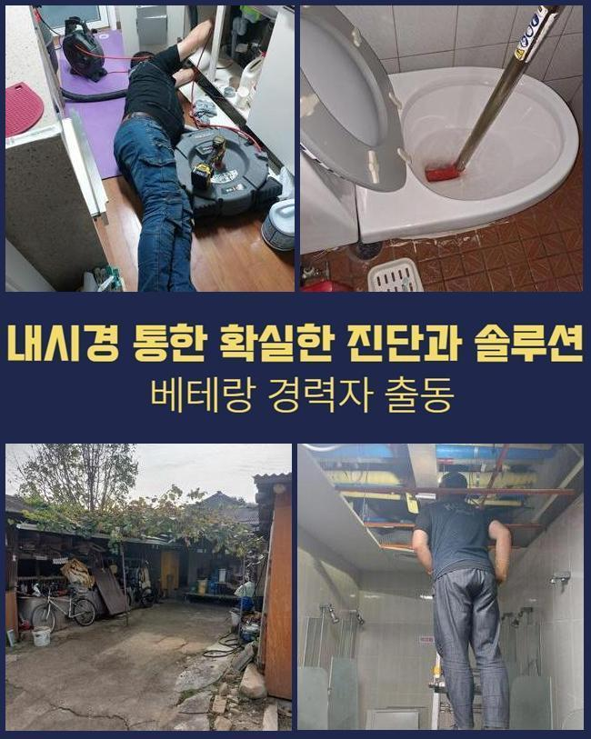
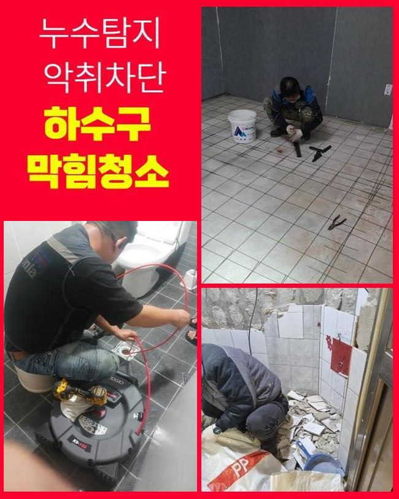
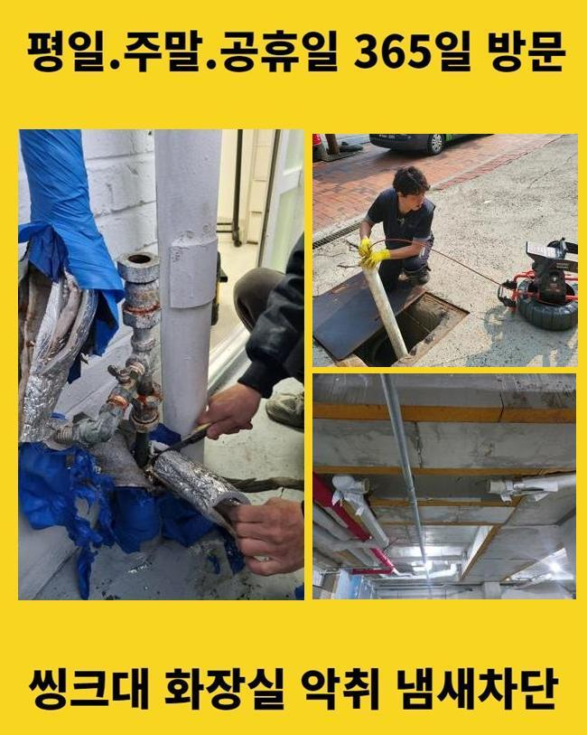
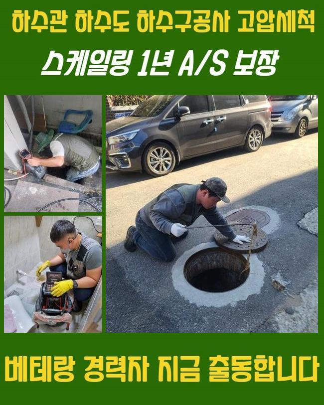
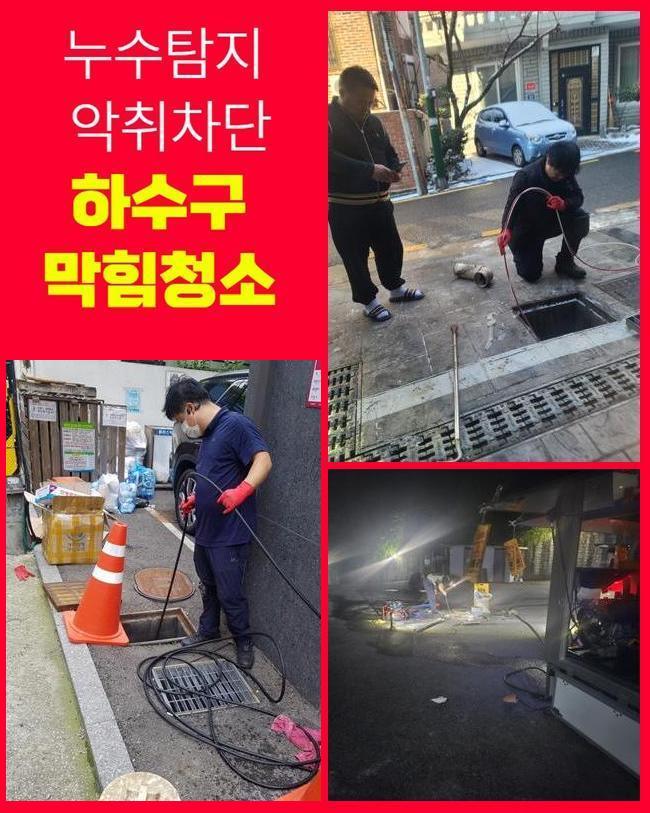
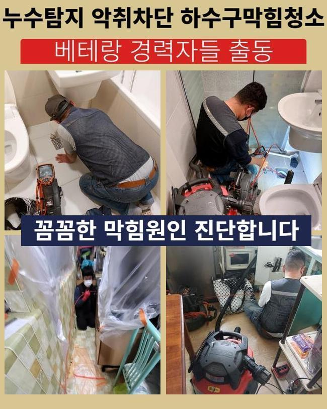

🏠 용산 용산동3가욕실뚫음 청파동 하수구청소 출장수리
용인 하수구막힘 전문 시공 후기

📋 작업 개요
- 위치: 용인
- 서비스 유형: 하수구막힘, 배관막힘, 누수수리, 뚫는업체, 배관청소
- 작업 일시: 2025. 5. 13. 10:00
- 업체명: 하수구수사대 (010-5615-2118)
🔍 문제 상황
용산 용산동3가욕실뚫음 청파동 하수구청소 출장수리
얼마전 물이 안내려가 스트레스를 받고 계셨던 고객께 연락이 왔었죠
고객분은 배수관에 대한 전문성을 띄고 계시진않았지만 약간은 지식들은 답습한 것이였죠
의뢰인의 경우 하수관을 깨끗히하고 막히게된 지점들을 찾아보려 노력했지만 어디가 문제가되는건지 알기가 힘들어 저희업체에게 해결을 바라셨던 상태였어요
해당 장소에 찾아뵈었더니 계속적인 시도로 고생하셨던 것이 한눈에 들어왔는데요
고객님 차원에서는 기조를 확인할 수 없는 현장들이 대다수입니다
내방해 하수도를 진단하니 주의해야할 증상은 없다고 판단했어요
고객분은 공용관로에서 이상이 있을 여지가 있을지모르겠다고 생각하게 되었어요
더불어 식물과 나무가 많이 있다면 땅 밑으로 침투할수도 있고 잔해물이 빠지게될 가능성들이 존재합니다
이것으로 외측의 배수관이 문제를 보일 수 있어요

🔎 원인 분석
💡 전문가 진단: 정밀 진단 장비를 사용하여 슬러지의 고착 여부를 판명하고 타격/세척 작업을 실시했습니다.
고객님에게 현상황의 예상되는 이유들을 일러드리고 외측을 관찰해야된다고 일러드렸습니다
의뢰자께서도 해당 사항을 들으시고 메인 하수 시스템 검수에 동의해주었어요
수리를 착수하기 이전에 장비점검도 해주었죠
통수오류의 이유는 한두가지가 아닌데요
외부설비의 경우 이런저런 이물질 등 근방에서 유입된 여러 폐기물들이 하수관으로 쌓이게되죠
외측에 비가 내릴때 외부에 위치한 설비의 상황들을 등한시한다면 점점 수렁으로 빠지게 될거에요
또한, 나무의 땅 밑으로 침투해버리는 사례도 종종 있죠
배수관을 찌르거나 심하면 표면손실 이슈도 야기시켜요
이런 문제들이 거듭되면 유수가 정체되는 탓에 막혀버리는 사태가 벌어지게돼요
그밖에 내식성이 내려가거나 손상에도 유수가 불가하여 막히게됩니다

🔧 작업 과정
시간들이 흐르며 표면이 튼튼하지 못하면 여러 폐기물들이 침전되는 제반이 만들어집니다
끝으로 대다수 통수오류의 까닭들은 때에 맞춘 관리를 등한시해서인데요
그때그때 소홀히 하면, 작은 여러 폐기물들이 자리를 잡으면서 막히는 상태가 심각수준으로 치닫을거에요
그래서 바깥쪽을 그때그때 점검하고 청소시키는게 선제적인 방법으로 합리적인 방식으로 작용합니다
수많은 기조를 알고서 미리 막는것이 우선과제에요
내시경장비로 바깥쪽 하수시스템들의 실태를 체크해보았어요
내시경장치로 확인하니 하수구의 구간별로 잔재들과 기름때문에 막혀버린것이 목격되었어요
이토록 하수관로가 막힐땐 물의 유수가 불가하여 누수까지 나타나므로 대응을 실시하는게 중요하겠습니다
검수과정 중 여러 폐기물들이 모인 곳을 포인트로 설정하고 청소해보기로 결론 지었어요
고압청소까지 준비하여 고수압으로 관로를 구석구석 청소했는데요
고착된 이물들을 내측에서부터 청소하였더니 정체현상을 보이던 하수가 배출되었는데요
입구쪽에서부터 부유물들이 배출됐고 잔해물이 빠지며 조금씩 원활히 본 모습을 되찾았어요
물이 원활히 출수되는 현상을 확인하며 의뢰자께서도 해당 과정들을 확인하셨어요
전 과정이 진행되고있는 중에 의뢰자와 얘기하면서 여러 폐기물들이 쌓이는 까닭들을 말씀드려보니 의뢰인분도 궁금하셨던 내용을 물으셨습니다
이로인해 의뢰인분은 관리를 해주는것의 중요도를 인지하게되었고 나중에까지 적재적소의 점검들의 불가피함을 공감했죠
끝내 작업들이 종료되고 하수도가 완전히 되돌아오고 여러분의 경우 통수되는 모습도 확인했습니다


✅ 작업 완료
고객님에게도 결과들을 말씀드리고 지속적으로의 관리방법들까지 안내해드렸어요
정기성을 갖추고 외부라인을 점검해본다던가 상황에 따라서는 전문성이 두드러지는 해결들을 꾀하는게 최선이라고 안내드렸어요
이것으로 고객분에게서 불편을 해결하게되어 다행스러웠네요
의뢰인분의 수월한 전반적인 통수에 보탬으로 다가설수있게 편하실 때 저희께 연락주세요



⚠️ 베란다 누수 및 방수 관리 방법
- ✅ 비가 많이 올 때 창틀 주변이나 아래층 천장에 얼룩이 생기는지 정기적으로 확인해 보세요.
- ✅ 우수관 주변 실리콘 마감이 들뜨거나 깨진 틈새가 있는지 손상 여부를 수시로 체크하세요.
- ✅ 베란다 바닥 타일의 줄눈(메지)이 소실되면 그 틈으로 물이 침투하여 누수가 유발됩니다.
- ✅ 누수 의심 증상 발견 시 방치하면 아래층 손실이 커지므로 즉시 전문가의 진단을 받으십시오.
💡 핵심 정리
- 확실한 장비 작업(내시경 점검 및 샤프트 스케일링)으로 원인을 뿌리 뽑습니다.
- 작업 후 1년 이내에 동일한 부위 재발 시 100% 무상 A/S 서비스를 보장합니다.
- 서울 · 경기 · 인천 전 지역에 24시간 언제든 긴급 출동할 수 있도록 항시 대기 중입니다.
❓ 자주 묻는 질문 (FAQ)
🚨 용인 하수구막힘 문제로 고민이신가요?
정확한 원인 진단과 확실한 시공으로 재발 없는 해결을 약속드립니다.
24시간 긴급 출동 | 서울 · 경기 · 인천 전지역 | 1년 내 재발 시 무상 A/S